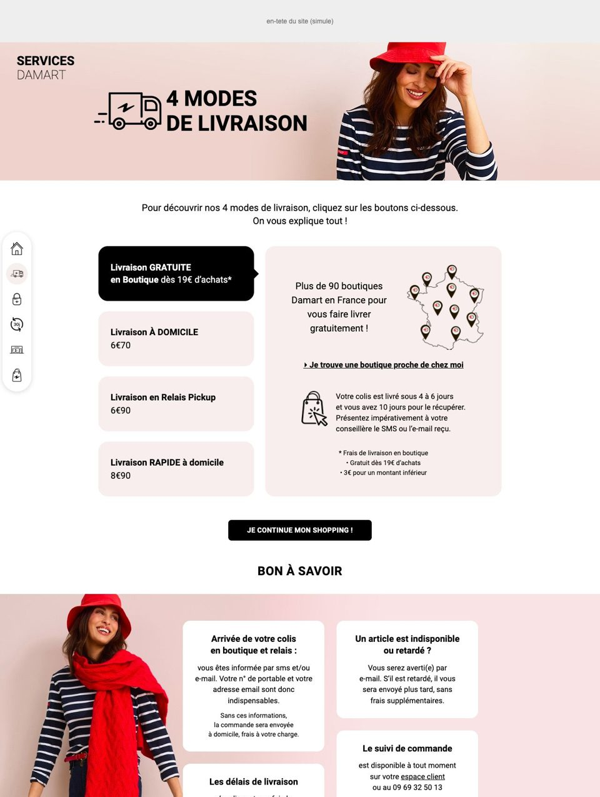

Je développe vos pages, vos sites et vos applications web, de la conception à la mise en ligne.
Pour Damart depuis 2020, pour Decathlon depuis 2023, et pour mes propres produits. Voir mes réalisations.

Depuis avril 2023. 131 landing pages publiées en 2026, au 6 novembre.
Depuis février 2020. Chaque campagne sur trois marchés, en deux langues.
Ce que j'ai mis en ligne.
Des pages chez mes clients, une application, des extensions. Le point vert mène à la page en ligne.
-


Une série de pages locales
La location de vélo, ville par ville : la même structure, le contenu propre à chaque ville.
Ouvrir la page de Lille decathlon.fr -


Une page d'accueil par campagne
La page d'accueil change à chaque campagne. Je la monte sur un marché, puis je la décline vers les deux autres.
-

Une page réglementaire tenue à jour
Les rappels de produits : une page sobre, où chaque mise à jour doit être exacte et publiée vite.
Ouvrir la page decathlon.fr -

Une page de service interactive, sans JavaScript
Les quatre modes de livraison : onglets, accordéons et carte animée, en CSS seul, parce que le site n'accepte aucun script.
En test chez Damart, mise en ligne à venir. -

Un guide des tailles lisible sur téléphone
Sept tableaux de tailles repris pour qu'ils tiennent sur un petit écran, en français et en néerlandais.
Visible depuis les fiches produit de damart.be. -
Trois sites WordPress que je maintiens
Je les entretiens pour leurs propriétaires : mises à jour, sauvegardes, formulaires.
-

Une application web en production
DocTap transforme des photos de documents en PDF propres, sur mobile. Je l'ai conçue et mise en production seul : Next.js, TypeScript, PDF assemblé sur le téléphone.
Ouvrir DocTap doctap.app -
Deux extensions WordPress publiées
Du PHP relu et accepté par l'annuaire officiel de WordPress, que chacun peut installer.
Entre 2017 et 2021, des missions freelance d'intégration front-end, en équipe : Blancheporte, Promod, Crédit Mutuel, La Foir'Fouille, Tape à l'Œil. De 2021 à 2024, Disneyland Paris.


Du premier brief à la mise en ligne, le même interlocuteur.
Ce que couvre mon travail.
La conception
Je pars de votre intention, pas d'un ticket. Sans maquette, je prototype avant de coder, et je reviens avec des options : chez Damart, sur un brief de tableaux de tailles, j'ai rendu trois variantes.
Le front-end
HTML, CSS, JavaScript, TypeScript, React et Next.js. Des interfaces qui tiennent sur téléphone, et qui se passent de JavaScript quand le site l'exige.
Le back-end et les données
PHP, Node.js, PostgreSQL, API. Des extensions WordPress publiées, et un projet personnel sur Supabase et PostgreSQL.
Les CMS de mes clients
Contentstack, Magento Page Builder, WordPress : je travaille dans vos outils, avec vos composants et vos règles, dans chaque langue.
La mise en production et le suivi
Déploiement, mises à jour, sauvegardes, et le diagnostic quand un site ralentit.
L'IA, quand elle sert
J'intègre des modèles de langage dans des produits, avec les tests qui prouvent qu'ils font ce qu'ils prétendent. Voir mes produits IA.
Un projet web à mener ?
Un mail avec ce que vous voulez construire, vos outils et votre échéance suffit pour commencer.
louis.rotellini@gmail.comOu sur LinkedIn.